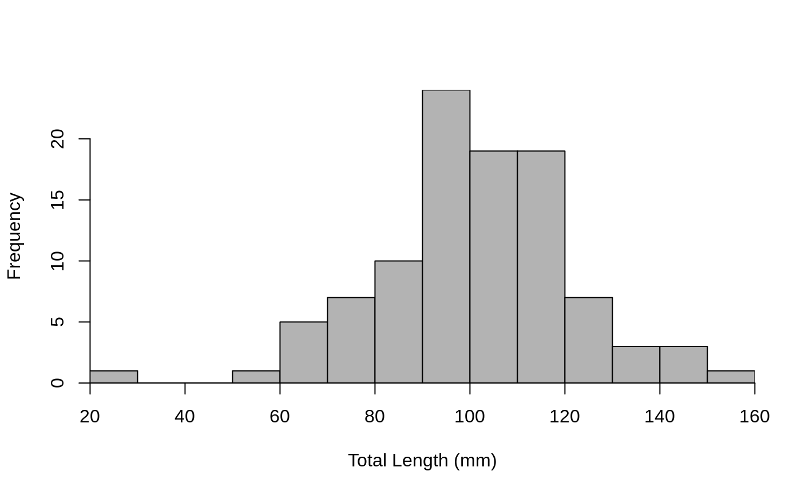

Creates a histogram from values in a frequency table. Primarily used with already summarized length frequency data.
histFromSum(x, ...) # S3 method for default histFromSum(x, y, ...) # S3 method for table histFromSum(x, ...) # S3 method for formula histFromSum(x, data = NULL, ...)
Arguments
| x | A numeric vector of bin/category values, a formula of the form |
|---|---|
| ... | Additional arguments for |
| y | A numeric vector of count/frequency values. |
| data | A data.frame that contains the |
Value
None, but a graphic is created.
Details
Creates a histogram fro values in a frequency table. The frequency table may be constructed from xtabs, table, or be in the form of a matrix or a data.frame (as if read in from an external data file).
See also
See hist and hist.formula for related functionality.
Examples
## Make some dummy data with a length category variable set.seed(634434789) df <- data.frame(tl=round(rnorm(100,100,20))) df$lcat10 <- lencat(df$tl,w=10) ## Summarize as tables ( tbl1 <- xtabs(~lcat10,data=df) )#> lcat10 #> 20 50 60 70 80 90 100 110 120 130 140 150 #> 1 1 5 7 10 24 19 19 7 3 3 1#> #> 20 50 60 70 80 90 100 110 120 130 140 150 #> 1 1 5 7 10 24 19 19 7 3 3 1## Turn the tables into a data.frame for testing (convert ## the categories variables to numeric with fact2num()) df2 <- data.frame(tbl1) df2$lcat10 <- fact2num(df2$lcat10) ## Turn the table into a matrix for testing ( mat1 <- cbind(lcat10=as.numeric(rownames(tbl1)),freq=tbl1) )#> lcat10 freq #> 20 20 1 #> 50 50 1 #> 60 60 5 #> 70 70 7 #> 80 80 10 #> 90 90 24 #> 100 100 19 #> 110 110 19 #> 120 120 7 #> 130 130 3 #> 140 140 3 #> 150 150 1## Histogram of the raw data ... set breaks and x-axis label brks <- seq(20,160,10) xlbl <- "Total Length (mm)" hist(~tl,data=df,breaks=brks,xlab=xlbl)## Use this function with various inputs ... changed colors ## on each plot so that it was obvious that a new plot was made. # table from xtabs() histFromSum(tbl1,breaks=brks,xlab=xlbl,col="gray75")# table from table() histFromSum(tbl2,breaks=brks,xlab=xlbl,col="gray70")# vectors from data.frame histFromSum(df2$lcat10,df2$Freq,breaks=brks,xlab=xlbl,col="gray65")# vectors from matrix histFromSum(mat1[,"lcat10"],mat1[,"freq"],breaks=brks,xlab=xlbl,col="gray60")# formula from a data.frame histFromSum(Freq~lcat10,data=df2,breaks=brks,xlab=xlbl,col="gray55")